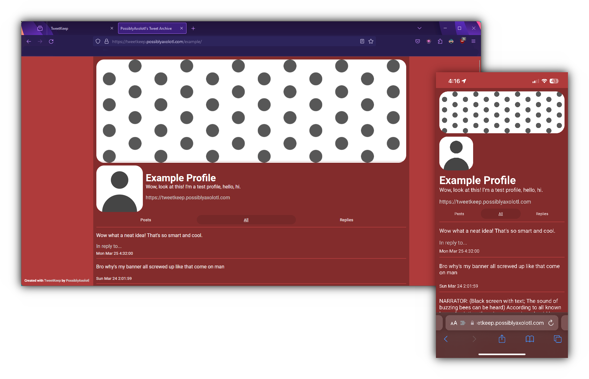

Created by PossiblyAxolotl
TweetKeep is a tool to automatically convert your Twitter archive (which is full of sensitive information) into a webpage that is safe to share.
TweetKeep pages support both desktop and mobile instantly on creation.
View an example on your device here.
TweetKeep in a way works similar to code mad-libs. It finds your profile picture, banner, media, username, bio, and tweets from your Twitter archive and builds you a webpage based on a template.
Once you've made a page, make it your own in the built in editor or create your own CSS.